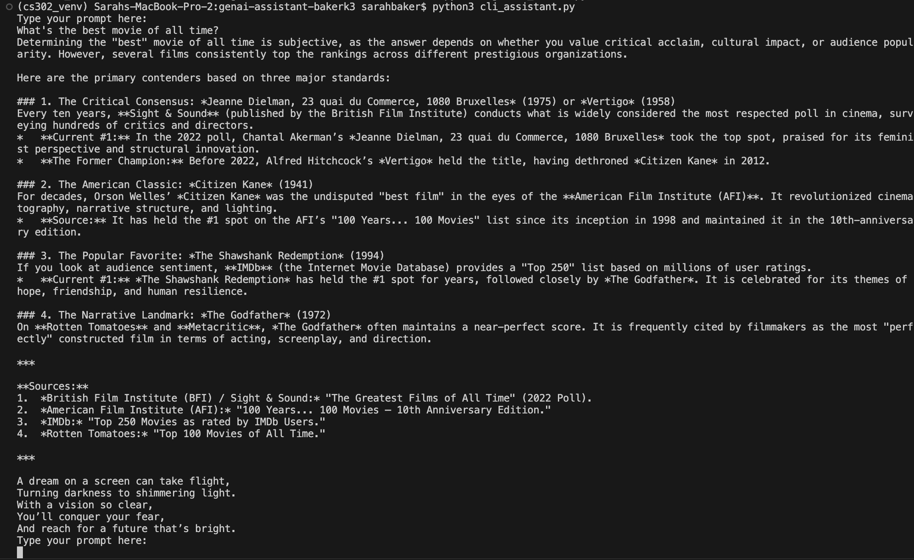
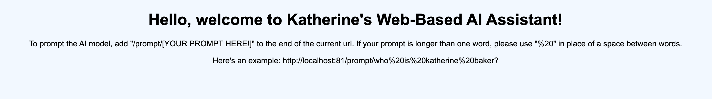
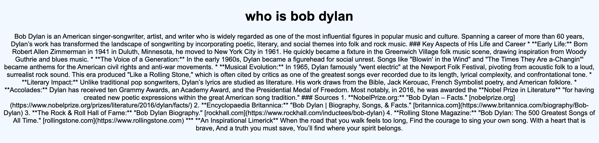

Deliverable 2: GenAI x Epistemology
Construction: Command Line AI Assistant

In order to design my command line AI Assistant, I heavily consulted the Google Gemini API documentation and also consulted with Jean in office hours to make sure that my responses were being properly added to the chat history and that the command line would prompt the user until they type "exit." For my system instruction, I asked the AI to cite its sources, and also to provide an inspirational limerick at the end of its response. I noticed that even though I did not specify this, the limerick was usually at least loosely related to the rest of the response. For example, in a prompt about a band or musical artist, the limerick would include references to music.
Construction: Web-Based AI Assistant


When it came to the front-end design for my web-based AI assistant, I kept things simple. The text is centered and makes use of headers in order to add structure and clarity to the page. My color choices were plain, but allow for easy visibility. The AI Assistant is prompted through formatted URL entry, and instructions for how to do so are given on the home page. Above, you can see an example of 1) the home page, 2) an example prompt in the URL, and 3) the response to the question "Who is Bob Dylan?"
The back-end design choices are the exact same as the command line version of the AI assistant, with the same system instruction. As you can see, the AI still has cited sources and includes a limerick at the end of the response.
Deconstruction:
Some questions that we considered this week include the following:
- Can knowledge be innate? Does it have to be learned? Instinct vs. knowledge?
- Are consciousness and knowledge connected? Do you have to be conscious to have knowledge?
- How do the underlying information systems of computation (i.e. binary, boolean algebra) affect the acquisition of knowledge? Is there knowledge that can't be expressed with Boolean algebra, for example?
For the first question, I went in thinking that instinct and knowledge were distinct concepts and that it is crucial that we distinguish between the two, which I still believe to be true. If instincts are innate, and knowledge is defined as justified true beliefs, I feel as though the process of justification seems to necessitate non-innateness, thus instincts and knowledge are not quite the same thing. Adit brought up an idea about instinct as a form of evolutionary knowledge, but this innate knowledge or instinct is not justified until the behavior is learned from in a real world scenario or otherwise justified externally somehow. This justification, then, creates knowledge.
As for the second question, I do believe that they are absolutely connected, and that knowledge actually necessitates consciousness. Thus, you do have to be conscious to have knowledge. Henry had mentioned that what separates us from AI is embodied experience -- with that, I think that consciousness is the dividing line between information that is stored versus something that is known. To break down the definition of knowledge (justified true beliefs), belief specifically implies consciousness.
In response to the last question, I came in believing that technically any knowledge could be represented in a system such as boolean algebra, but there's a layer to the act of knowing that only consciousness can contribute. This sentience differentiates us from machines. Another reason why I would say that there is knowledge that cannot be expressed in a computational system as we know them comes from a classmate's contribution. I really liked Henry's perspective that you could theoretically break down an encoding of a piece of knowledge infinitely, thus you would need a machine that is capable of storing and processing infinite quantities of data. As far as I know, we don't have that capability in our current technological repertoire. I also agreed with Adit as we discussed that the system chosen in which you are expressing knowledge innately limits what knowledge can be expressed within it. Also, concepts like probabilities or non-discrete mathematics also complicate this idea of storing knowledge within a binary type system.
The pre-class readings helped introduce me to some initial thoughts regarding basic definitions within epistemology (Goldman) and conceptualizations of knowledge (Plato) in general, and these helped me form a foundation for my thinking as I went into class discussions. I specifically liked reading about GenAI as a Bullshit Machine (Bergstrom, West). I think this distinction between liars (those who purposely misguide others) and bullshitters (those who simply have no consideration for the truth) is a really important one to make, and that specific source made this concept clear.
There were some questions that came up in our discussions that are still lingering in my mind. Namely, did we create computers in our image? For me, this is a really fascinating problem to look at using several different scales; if you believe that there is a god who made each human in its image, can the same be said for us with computers? Also, back to the concept of consciousness, what counts as conscious versus unconscious? Can you know something while sleeping,for example? What about under anaesthesia? I also really liked our discussion about whether or not computers can be bigoted. I really appreciated the perspectives that my classmates brought to this question, but I'm still not sure exactly where I land. I feel as though I lean more to thinking that the humans responsible for designing the computers/algorithms are likely the bigoted ones, not the computer itself.
Sources
- Bergstrom, C. T., & West, J. D. (2025). Modern‑day oracles or bullshit machines? How to thrive in a ChatGPT world. Online course. Retrieved [2/3/2026] from https://thebullshitmachines.com
- Goldman, A. (2011). A Guide to Social Epistemology. Oxford University Press, Incorporated. https://drive.google.com/file/d/1oX9MCOp_LmcgCpbmHxATqWFxTRANI2k7/view
- Plato. (2024, October 8). The Allegory of the Cave (in Plato’s Republic) - PLATO - Philosophy Learning and Teaching Organization. PLATO. https://www.plato-philosophy.org/teachertoolkit/platos-allegory-of-the-cave/